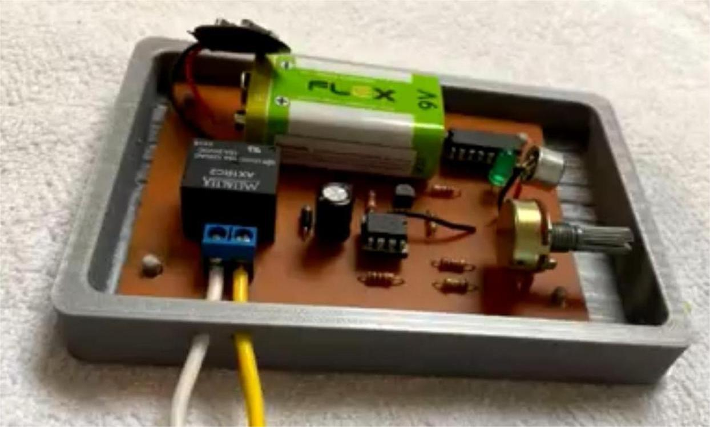
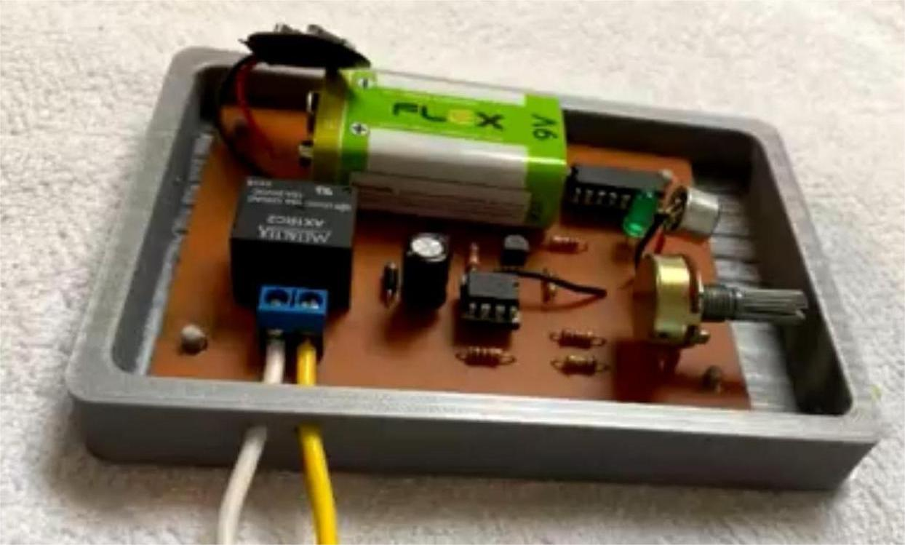
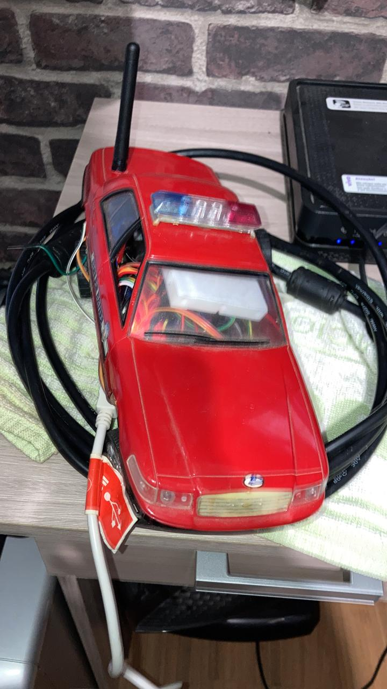
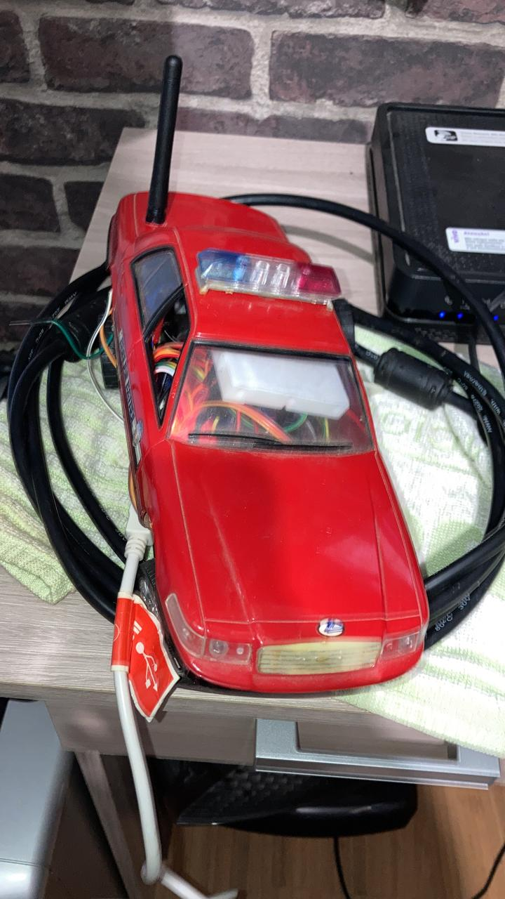
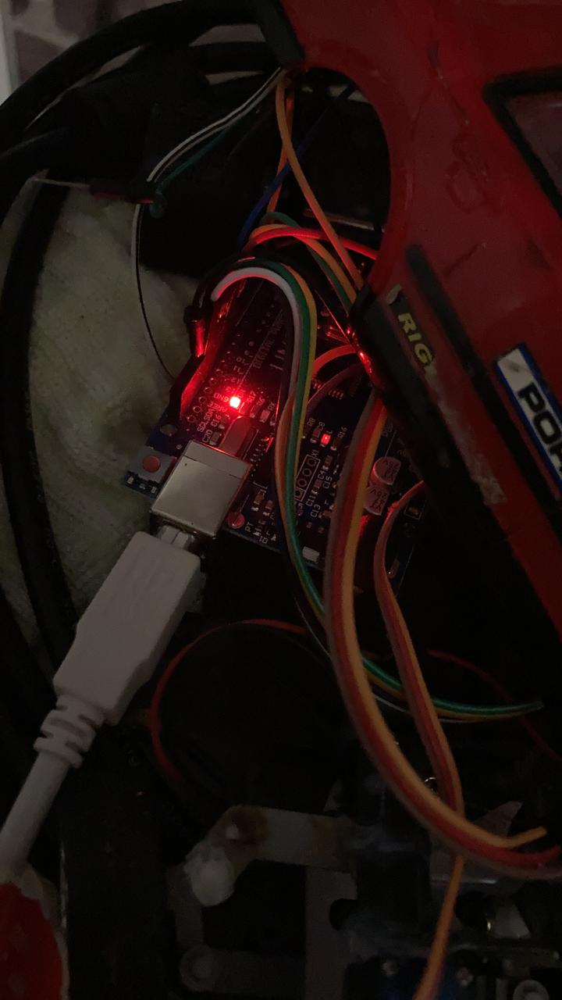
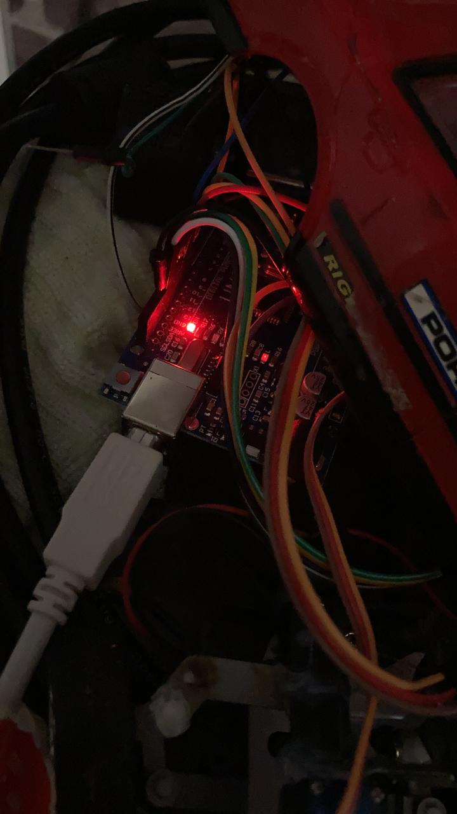

Projetos de Eletrônica
Aqui estão alguns dos projetos que desenvolvi na área de eletrônica, desde automação até circuitos digitais.
🤖 Robô de Irrigação Pontual
Em 2017, participei do projeto de robótica no IFPR, onde desenvolvemos um robô irrigador inteligente. O sistema foi projetado para reduzir o desperdício de água nas plantações, identificando a necessidade de irrigação por sensores infravermelhos.
O robô era um veículo autônomo que media a umidade do solo e irrigava apenas onde necessário, reduzindo o consumo de água. Além disso, contava com um sistema de GPS para retornar à base quando a bateria estivesse baixa, onde era recarregado por energia solar.
Palavras-chave: Irrigação, Economia de Água, Automação Agrícola
Equipe: Matheus Barbosa da Silva e outros colegas do IFPR

📄 Referência do projeto (Página 16): Clique aqui
🔢 Esteira com Display Contador
Em 2018, desenvolvi um sistema de contagem utilizando eletrônica digital. O projeto consistia em uma esteira transportadora equipada com um display contador, capaz de registrar a passagem de objetos.
Componentes Utilizados:
- CI's 555 para controle do pulso
- CI's 4026 para comandar a contagem e exibição no display
- LEDs infravermelhos para detecção de passagem
- 2 Displays 7 Segmentos para contagem de 00 à 99
- Motor de vidro elétrico de carro para movimentação da esteira
- Potênciometro 100k Ohms
- Transistor Mosfet IRFZ46N
O protótipo foi construído com materiais simples, como tubos de rolo de pintura e lixas, para simular uma esteira real de baixo custo.
📷 Imagens do projeto:


👏 Interruptor por Palmas
A realização desse projeto visa atender à atividade do primeiro bimestre da disciplina de Circuitos Elétricos II dos cursos de Engenharia Elétrica e da Computação da Universidade Positivo. A proposta docente era construir um circuito prático com pelo menos dez elementos básicos e a presença de capacitores ou indutores. A proposta de chaveamento por palmas foi escolhida para acionar elementos elétricos sem o contato direto com o interruptor.
Este projeto tem como objetivo inovar e trazer soluções interessantes para o chaveamento de lâmpadas ou mecanismos elétricos, permitindo o acionamento através de palmas. A realização do circuito foi testada e atestada para o perfeito funcionamento.
Componentes Utilizados:
- CI 555
- CI 4017
- Bateria 9v
- Potênciometro 100k Ohms
- Resistores
- Transistores BC548
- Microfone de Eletreto
- Capacitor e Diodo
- Relé 12v
📷 Imagens e Vídeos do projeto:


 

🚔 Carrinho de Polícia com Cockpit de Ativação Remota
Este projeto envolve a modificação de um carrinho de controle remoto tradicional. Retirei a placa de controle original e substituí por um novo sistema com arduino, incluindo um servomotor com uma nova estrutura para controle de eixos das rodas, um novo motor de tração, giroflex com LEDs e um cockpit com volante, pedais como acelerador e freio e switche de ativação.
O carrinho foi adaptado com um servo motor para controle das rodas e um sistema de comunicação sem fio, com base no código desenvolvido no Tinkercad.
Componentes Utilizados:
- Motor de tração
- Servo motor 90g
- Tecla de ativação para LED's
- LED's azul e vermelho para giroflex
- Pedais para acelerador e freio
- Transmissor e receptor de RF
- Placas de Arduino UNO para controle
- Módulo Relé
- Bateria 9v
📷 Imagens do projeto:
 

 

🔗 Acesse o código do projeto no Tinkercad: Clique aqui